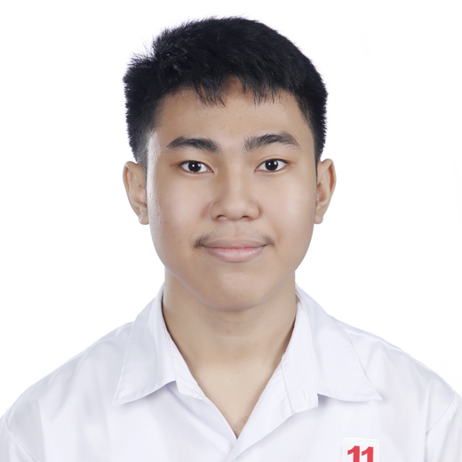

Clean Bathrooms, Healthy Communities.
We empower Malaya and Maparaan through hygiene education and the development of clean, functional bathrooms.
About Us
Who we are. A student-led advocacy from Claret School of Quezon City focused on improving bathroom sanitation in Malaya and Maparaan.
Vision. A community where everyone has access to safe and sanitary bathroom facilities.
Mission. Promote hygiene through education, partnerships, and improving bathroom facilities.
Core Values
- Cleanliness
- Compassion
- Cooperation
- Community Service
Meet the Team

Dwyane Catangui
Leader & Website Designer

Stephen Reyes
Vlog Point Person

Luigi Amorin
Social Media Manager

Rafael Jarabata
Podcast Crew

Mark Estrella
Podcast Point Person

Alfonso Batungbacal
Vlog Crew
The Program
- Goal Provide clean toilets and bathrooms for families in Malaya and Maparaan, Quezon City.
- Fundraising Drive Garage sales, donation boxes, and school fundraisers for cleaning and repair supplies.
- Social Media Campaign Spread awareness using #BayanKoLinisKo and creative content.
- School & Community Activities Hygiene talks, poster making, clean-up drives, and waste management workshops.
- Stakeholder Meetings Collaborate with LGU, DOH, school boards, and NGOs.
- Implementation & Monitoring Improve bathrooms and maintain sanitation with regular checks.
Advocacy
- Core Message Clean and safe bathrooms are essential to protect health and dignity. Every resident of Malaya and Maparaan deserves a space where they feel safe, respected, and cared for.
- Why It Matters Families face higher risks of infections and missed school days when sanitation is poor. Improving bathroom conditions means preventing disease, boosting confidence, and creating a healthier foundation for the next generation.
- Our Commitment We raise awareness about the importance of good hygiene and responsible bathroom use. We believe that when a community values cleanliness, everyone benefits from a safer and more dignified environment.
The heart of Bayan Ko, Linis Ko is simple. Respect people. Protect health. Build dignity through clean spaces. When our bathrooms are cared for, our community is cared for too.